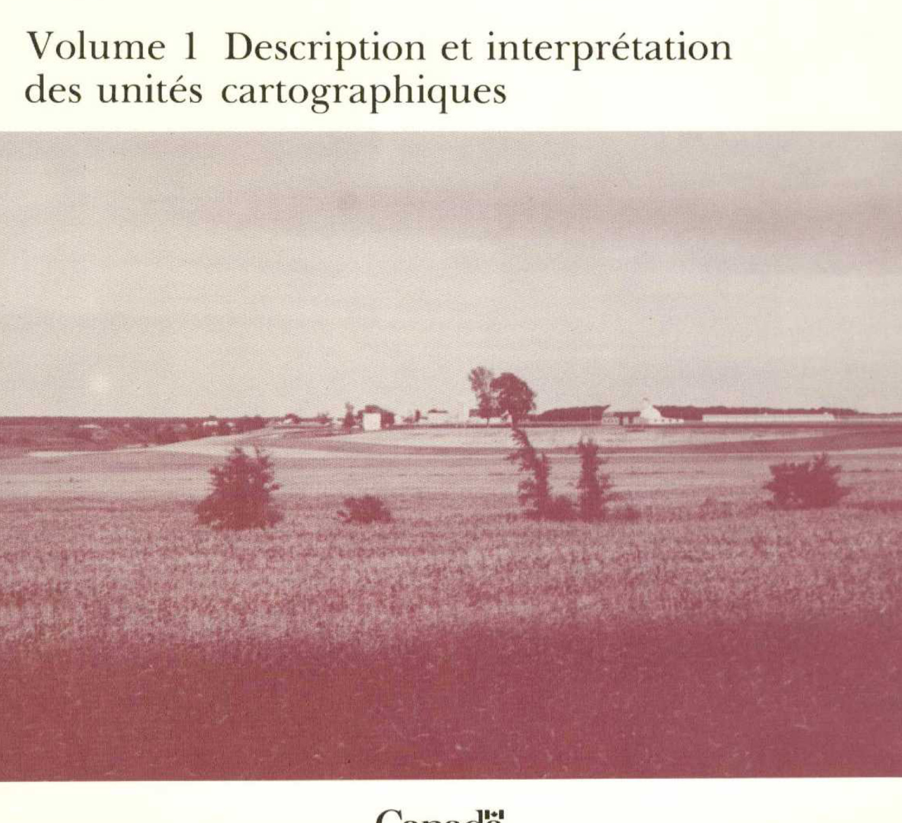

Identification & Caractéristiques Générales
Les sols de la série Richelieu se sont développés sur des dépôts meubles à texture fine, constitués principalement de matériaux limono-argileux ou argileux d'origine alluvio-lacustre, reposant généralement sur les basses terres de la plaine de Montréal et s'étendant à proximité du réseau hydrographique de la rivière Richelieu. Sur le plan géomorphologique, ces sédiments occupent des paysages caractérisés par une topographie plane à doucement ondulée, présentant une faible déclivité orientée vers les axes de drainage naturels. La pierrosité de surface est généralement absente, bien que de rares éléments grossiers puissent ponctuellement être observés dans certains secteurs.
Sur le plan morphologique, le profil se caractérise par un horizon de surface brun foncé grisâtre à texture franche argileuse ou de type franc sableux fin, surmontant un sous-sol dont la texture est plus lourde. L'horizon éluviad (A2) est faiblement exprimé et ne s'observe que dans les profils les mieux drainés. La réaction du sol varie de acide en surface à neutre ou légèrement alcaline en profondeur. Le drainage naturel est globalement imparfait à défectueux en raison d'un égouttement interne insuffisant et d'une perméabilité lente, entraînant l'apparition d'une nappe phréatique perchée temporaire lors de la fonte des neiges et des épisodes de précipitations abondantes.
Du point de vue agronomique, ces sols sont presque entièrement défrichés et consacrés aux grandes cultures, notamment la production de céréales, de foin, de maïs, ainsi que de diverses cultures sarclées et légumineuses. La gestion de ces terres requiert l'installation d'un réseau de drainage souterrain adéquat pour pallier les excès d'humidité printaniers. Les programmes de fertilisation doivent intégrer des apports réguliers de amendements calciques (chaulage) afin de corriger l'acidité superficielle et d'optimiser les rendements des cultures sensibles, tandis que le travail du sol doit être géré avec rigueur pour préserver la structure des horizons argileux.
Classification Taxonomique & Environnement Pédologique
| Ordre Pédologique | Gleysolique |
|---|---|
| Grand Groupe (SCSS) | Gleysol humique |
| Sous-Groupe Taxonomique | Gleysol humique orthique |
| Famille Pédologique | Argileuse-fine, mixte sableux, neutre |
| Mode de Dépôt Parental | Fluviatile |
| Classe de Drainage Naturel | Imparfaitement drainé |
| Régime Thermique & Humidité | Doux / Humide |
Description Morphologique du Profil Type
Séquence génétique des horizons pédologiques caractérisant le profil type représentatif de la série Richelieu :
Profil naturel (vierge) — Comté de Shefford
✓ Source : Comté de Shefford — Page 67Couleur Munsell : Non précisée
Structure & Consistance : Granuleuse ordinairement bien développée
Description morphologique : terre franche argileuse gris brun; structure granuleuse ordinairement bien développée; friable; pH 5.7
Couleur Munsell : Non précisée
Structure & Consistance : Polyédrique à granulaire
Description morphologique : généralement absent.
Couleur Munsell : Non précisée
Structure & Consistance : Polyédrique à granulaire
Description morphologique : terre franche limoneuse à franche argileuse grisâtre; marbrée; massive; plastique lorsque'elle est humide; pH 6.3
Couleur Munsell : Non précisée
Structure & Consistance : Nuciforme
Description morphologique : terre franche argileuse gris brun; faible structure nuciforme; marbrée; pH 7.0
Couleur Munsell : Non précisée
Structure & Consistance : Polyédrique à granulaire
Description morphologique : argile grise; marbrée avec plaques brun rouillé; massive; pH 7.1
Profils Photographiques & Planches de Terrain
Documents iconographiques, figures pédologiques et coupes de terrain documentées dans les mémoires d'inventaire pour de la série Richelieu :




Propriétés Physico-Chimiques & Analyses de Laboratoire
| Horizon | Prof. (pces) | pH | C org. % | N % | C/N | Sable grossier % | Sable fin % | Sable tot. % | Limon % | Argile % | Ca éch. | Mg éch. | K éch. | Na éch. | Bases tot. | C.E.C. | Saturation % |
|---|---|---|---|---|---|---|---|---|---|---|---|---|---|---|---|---|---|
| Couche de surface | N | 5 | 5 | 5 | 5 | 21 | 21 | 21 | 21 | 21 | 20 | 20 | 20 | 20 | 17 | 19 | LLi, L |
| Moyenne | 1,7 | 3,9 | 6,0 | 12,8 | 31,5 | 49,0 | 19,5 | 6,0 | 1,92 | 7,7 | 2,32 | 0,23 | 0,19 | 16,55 | 60,5 | ||
| Inférieure | 0,0 | 0,0 | 2,5 | 3,9 | 27,6 | 45,0 | 17,7 | 5,9 | 1,62 | 6,3 | 1,94 | 0,20 | 0,13 | 14,77 | 50,2 | ||
| Supérieure | 4,2 | 8,7 | 9,4 | 21,8 | 35,5 | 53,0 | 21,2 | 6,2 | 2,24 | 9,3 | 2,75 | 0,26 | 0,24 | 18,54 | 72,9 | ||
| CV | 148,3 | 130,7 | 60,2 | 72,8 | 33,3 | 21,8 | 23,6 | 8,1 | 26,4 | 20,4 | 26,1 | 30,7 | 73,2 | 8,9 | 11,2 | ||
| Classe de contenu** | M | F | M | F | M | M | F | ||||||||||
| Sous-sol | N | 9 | 9 | 9 | 9 | 10 | 10 | 10 | 10 | 10 | 10 | 10 | 10 | 10 | 10 | 10 | LLiA |
| Moyenne | 0,9 | 1,4 | 4,8 | 7,9 | 15,5 | 52,0 | 32,5 | 6,1 | 1,80 | 12,0 | 2,89 | 0,30 | 0,13 | 23,96 | 66,6 | ||
| Inférieure | 0,7 | 1,1 | 3,3 | 5,6 | 12,4 | 49,5 | 31,1 | 5,7 | 1,53 | 9,3 | 2,32 | 0,26 | 0,11 | 21,53 | 45,0 | ||
| Supérieure | 1,2 | 1,7 | 6,4 | 10,2 | 18,5 | 54,5 | 34,0 | 6,5 | 2,11 | 15,4 | 3,56 | 0,35 | 0,15 | 26,66 | 98,4 | ||
| CV | 40,5 | 38,3 | 50,8 | 47,3 | 33,8 | 8,3 | 7,6 | 12,5 | 17,3 | 15,6 | 20,2 | 22,3 | 28,2 | 5,5 | 15,8 | ||
| Classe de contenu** | M | M | E | M | F | M | F | ||||||||||
| Sous-sol | N | 6 | 6 | 6 | 6 | 12 | 12 | 12 | 12 | 1 | 7 | 7 | 7 | 7 | 7 | 6 | |
| Moyenne | 0,5 | 1,1 | 5,3 | 11,6 | 21,8 | 49,5 | 28,7 | 6,6 | 0,38 | 10,1 | 4,22 | 0,23 | 0,26 | 19,69 | 77,4 | ||
| Inférieure | 0,3 | 0,4 | 2,2 | 7,7 | 16,6 | 45,1 | 26,2 | 6,4 | - | 8,2 | 2,99 | 0,21 | 0,15 | 17,39 | 48,4 | ||
| Supérieure | 0,8 | 1,8 | 8,3 | 15,5 | 27,0 | 53,9 | 31,2 | 6,8 | - | 12,5 | 5,83 | 0,26 | 0,37 | 22,27 | 123,3 | ||
| CV | 53,9 | 74,9 | 70,3 | 41,1 | 45,7 | 17,0 | 16,6 | 5,8 | - | 10,9 | 22,2 | 13,3 | 53,2 | 5,3 | 12,9 | ||
| Substratum | N | 9 | 9 | 9 | 9 | 12 | 12 | 12 | 12 | 3 | 10 | 10 | 10 | 10 | 10 | 9 | |
| Moyenne | 0,2 | 0,5 | 1,1 | 3,2 | 5,9 | 36,4 | 57,7 | 7,1 | 0,19 | 15,7 | 6,55 | 0,52 | 0,51 | 28,71 | 160,4 | ||
| Inférieure | 0,0 | 0,2 | 0,7 | 1,7 | 4,0 | 30,1 | 50,5 | 6,9 | 0,09 | 12,1 | 5,19 | 0,43 | 0,25 | 24,51 | 100,8 | ||
| Supérieure | 0,3 | 0,8 | 1,6 | 4,8 | 7,8 | 42,6 | 65,0 | 7,2 | 0,27 | 20,2 | 8,21 | 0,61 | 0,84 | 33,61 | 255,0 | ||
| CV | 133,5 | 88,8 | 57,3 | 77,3 | 61,4 | 33,0 | 24,1 | 5,0 | 27,5 | 14,7 | 17,0 | 25,0 | 81,0 | 7,8 | 14,6 |
Particularités Régionales, Phases & Variantes Pédologiques
Déclinaisons régionales, faciès texturaux, phases d'érosion ou de pierrosité et variantes cartographiées par étude pour de la série Richelieu :
| Étude Régionale | Symbole | Appellation / Phase / Variante | Différenciation avec la série type (Analyse pédologique) |
|---|---|---|---|
| Comté de Shefford | Ricl |
Richelieu loam argileux | Modalité modale de référence (type de base de la série). |
Riscl |
Richelieu loam sablo-argileux | Faciès argileux plus lourd et compact que le loam argileux de référence. | |
Risl |
Richelieu loam sableux fin | Faciès sableux/loam sableux nettement plus grossier et perméable que l'argile modale. | |
| Comté de Iberville | RC |
Richelieu limoneux fin sur argileux | Faciès argileux plus lourd et compact que le loam argileux de référence. |
RCi |
Richelieu limoneux fin sur argileux phase inondée | Faciès argileux plus lourd et compact que le loam argileux de référence. | |
| Comté de Napierville | RC |
Richelieu | Conforme à la série type de référence (caractéristiques texturales et drainage identiques). |
| Comté de Saint-jean | RC |
Richelieu loam limono-argileux | Faciès argileux plus lourd et compact que le loam argileux de référence. |
RCi |
Richelieu loam limono-argileux occasionnellemnt inondé | Faciès argileux plus lourd et compact que le loam argileux de référence. | |
| Comté de St-jean | RHU |
Richelieu | Conforme à la série type de référence (caractéristiques texturales et drainage identiques). |
Distribution Pédo-Paysagère & Représentativité Cartographique (Couverture PPS 2026)
- Saint-Marcel loam argileux (MAR) — co-occurrente dans 8 polygone(s)
- Saint-Laurent loam limono-argileux (SIE) — co-occurrente dans 7 polygone(s)
Aptitudes Agronomiques, Hydropédologie & Conservation des Sols
Indicateurs Hydropédologiques & Vulnérabilité à l'Érosion (BDHP 2026)
Interprétation BDHP : Potentiel de ruissellement modérément élevé. Faible taux d'infiltration, présence d'horizons ralentissant le drainage descendant.
Classement selon l'Inventaire des Terres du Canada (ITC / CLI) : Classe 2c.
- Potentiel agricole : Terroir adapté aux cultures régionales selon la texture dominante et la régie de drainage.
- Contraintes majeures : Imparfaitement drainé. Risque d'engorgement temporaire ou d'excès d'eau printanier.
- Gestion & Aménagement : Drainage souterrain ou superficiel préconisé sur les terres planes. Chaulage et apport organique régulier selon les bilans agronomiques.
- Cultures adaptées : Grandes cultures (maïs, soya, céréales), prairies fourragères et cultures maraîchères selon le contexte géomorphologique.